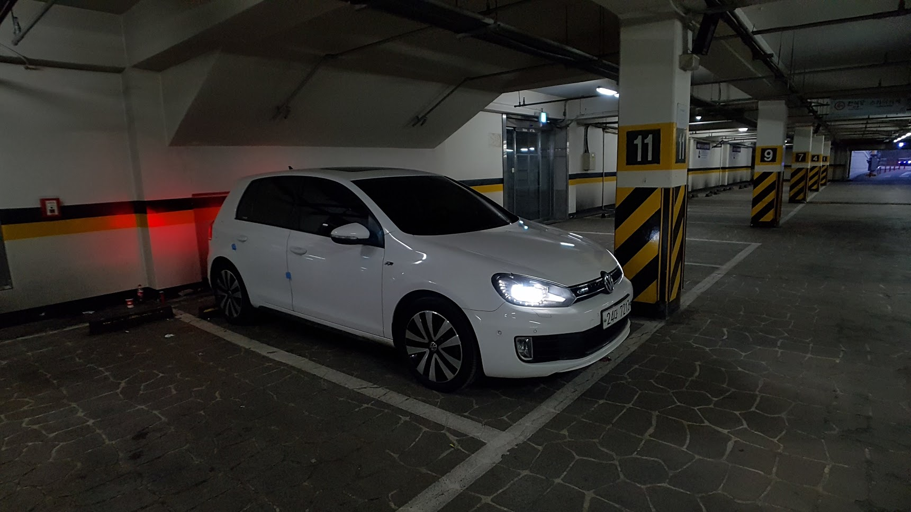
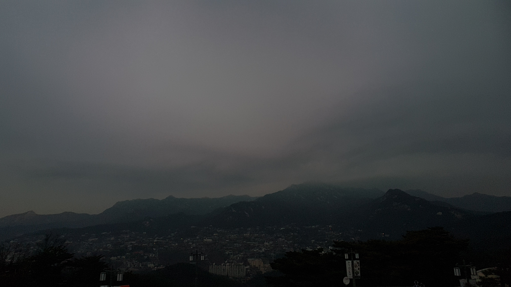
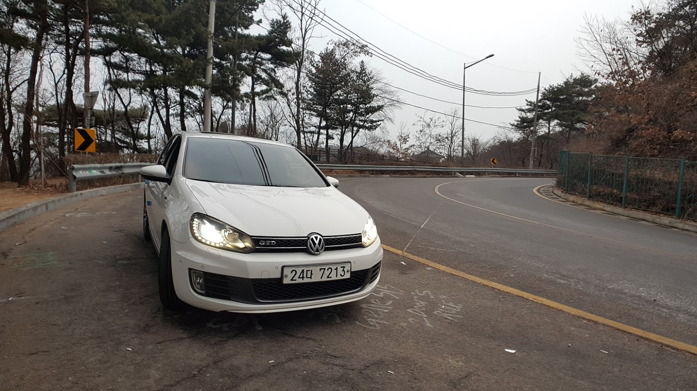
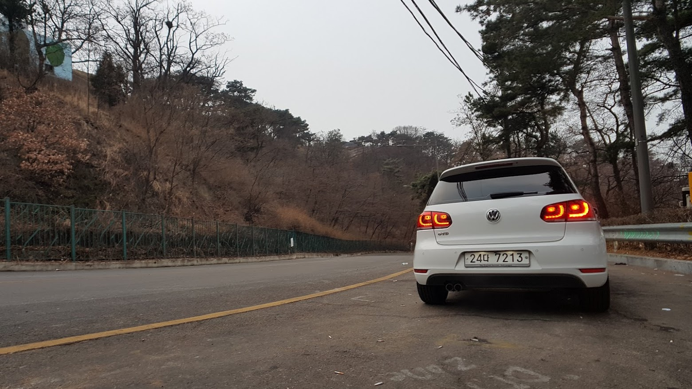

작은 차체, 넉넉한 토크, DCT 미션의 골프 GTD 차주라면 누구나 와인딩을 가고싶어하지 않을까?
와인딩 :
꼬불꼬불한 길을 따라 계속 핸들을 조타하면서 달리는 행위를 말한다.
오늘은 와인딩을 위해 아침 일찍 북악스카이웨이로 향했다. 북악스카이웨이는 ‘서울 와인딩 코스’로 검색하면 쉽게 찾을 수 있을 만큼 서울 내에서는 나름 알려진 와인딩 코스이다.
내비게이션에 북악스카이웨이팔각정(서울 종로구 북악산로 267 북악팔각정)을 목적지로 입력하고 출발. 1시간정도 걸려 북안스카이웨이 초입에 도착했다.
새벽 7시가 채 되기 전이라 그런지 나 말고는 차량이 보이지 않았다.
와인딩을 즐기기에 딱 좋은 상황, 조심 스럽게 엑셀을 밟아보는데 실내로 들려오는 엔진 사운드가 예술이다. 👍👍👍

첫 와인딩에 타이어도 사계절용 타이어라 조심 스럽게 와인딩을 즐긴 후 팔각정 주차장 도착. 역시나 아무도 없다.

이른 시간이라기 보다 오늘은 날이 좋지 않아서 사람들이 안 나온게 맞는 것 같다.. 팔각정에서 멋지 경치를 기대했는데 완전 실패.


경치는 실패 했지만 와인딩은 즐겁게 탄 것 같다. 한 번 타보니 서스펜션, 타이어, 브레이크 정도 손보면 좀 더 재밌게 와인딩을 즐길 수 있을 것 같다는 생각이 든다. 이렇게 튜닝의 길로 빠지는 건가 싶지만 난 돈이 없으니 걱정할 필요도 없겠다 싶네..
내려가는 길에 기념 사진도 몇장 남겨본다. 개취긴 하지만 7세대 보다는 6세대가 볼륨감도 있고 확실히 이쁜 것 같다.
기록 끝.